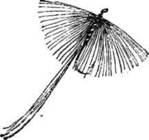
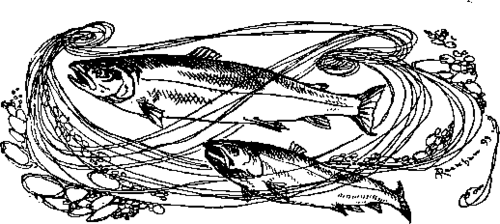

Sea Trout Fishing. Part 6
Description
This section is from the book "Fly Fishing", by Sir Edward Grey. Also available from Amazon: Fly Fishing.
Sea Trout Fishing. Part 6
Migratory salmonidae are generally divided into three species—salmo salar, salmo eriox, and salmo trutta. Of salmo eriox, the bull trout, I have had no experience. It has the reputation of being a powerful fish, but a very bad riser, and in rivers such as the Coquet of being almost useless for angling purposes. As a kelt it takes a fly well enough in the spring. Salmo trutta, the salmon trout, is, I believe, the best sporting fish for its size in the world. There seem to me to be two distinct classes of salmo trutta. There is the mature fish, which ranges in weight from one pound up to five pounds as a rule, and may grow exceptionally to much larger weights; and there is a smaller fish, which enters the rivers rather later in vast quantities. This latter ranges in weight from four ounces to any size up to one pound. It goes by various names on different rivers, but is commonly supposed to be the grilse of salmo trutta, and both in its appearance and in its rash unwary nature, it has all the characteristics of being a young fish, which is mature neither in mind nor body. In most rivers, however, these fish of the smaller class seem to outnumber the mature sea trout of all ages, which is not the case, taking all the season through, as between grilse and salmon.
Sometimes I think that sea trout fishing is the best of all sport. It combines all the wild-ness of salmon fishing, with the independence of trout fishing, and one may have all the excitement of hooking large fish without using a heavy rod and heavy tackle. There is less rule and less formality about it than there is about salmon fishing, and there seems more scope for the individuality of the angler. Perhaps this is partly because the sea trout season comes so directly after a long period of work in the stale air of cities, and coincides with the first burst into freedom and fresh atmosphere. The difference is so great in August, after a few days of exercise in the air of the North, that there come times when the angler, who wanders alone after sea trout down glens and over moors, has a sense of physical energy and strength beyond all his experience in ordinary life. Often after walking a mile or two on the way to the river, at a brisk pace, there comes upon one a feeling of " fitness," of being made of nothing but health and strength so perfect, that life need have no other end but to enjoy them. It is as though till that moment one had breathed with only a part of one's lungs, and as though now for the first time the whole lungs were filling with air. The pure act of breathing at such times seems glorious. People talk of being a child of nature, and moments such as these are the times when it is possible to feel so; to know the full joy of animal life— to desire nothing beyond. There are times when I have stood still for joy of it all, on my way through the wild freedom of a Highland moor, and felt the wind, and looked upon the mountains and water and light and sky, till I felt conscious only of the strength of a mighty current of life, which swept away all consciousness of self, and made me a part of all that I beheld.

Continue to: